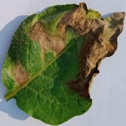
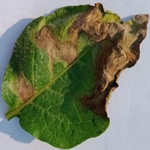

The Rationale
Why the VGG-19 Architecture?
VGG-19 was selected based on the conclusion of extensive experiments and research studies, which consistently identify it as one of the most superior deep convolutional neural network (DCNN) architectures.
Notably, a study by Ghosh et al. provided a comprehensive analysis of three advanced DCNN models—VGG-19, DenseNet121, and ResNet50—for recognizing and classifying potato leaf disease images.
Their findings revealed that DenseNet121 achieved the highest accuracy of 97.92%, followed by VGG-19 at 92.71%, and ResNet50 at 92.67%.
However, upon conducting a similar experiment, I discovered that VGG-19 was the best-performing architecture among the three.
The VGG-19 model achieved a test accuracy of 87.15%, outperforming DenseNet121, which scored 81.04%, and ResNet50, which achieved 77.74%.
The Modifications
The modifications made to the baseline VGG-19 architecture includes the introduction of a Global Average Pooling (GAP) layer, reducing the dimensions of the dense layers, adding dropout layers, incorporating both L1 and L2 regularizations, monitoring the validation loss, and checks for the learning rate.
It also has included image preprocessing, and image augmentation to achieve better generalization.
The GAP was introduced to reduce spatial dimensions which forces the model to focus on the most significant features instead of details that might not be important.
It is beneficial for smaller fully connected (FC) layers because it simplifies the transition between the convolutional layers and the classification layers, reducing the overall number of parameters in the fully connected layers.
The dense fully connected layers were reduced in dimension because through extensive experimentation and trial and error, we discovered that the large number of parameters in the baseline VGG-19 architecture
contributed to the overfitting observed by the study of Ghosh et al. This is due to the fact that the problem at hand was not overly complex — the model was tasked with classifying only three classes with each having relatively simple features,
which made it so that less parameters is better for better generalization.
Furthermore, the reduction in the size of dense layers helps mitigate overparameterization, which in turn reduces the risk of overfitting. Fewer neurons in the dense layers lead to faster training and inference times, which is especially crucial when deploying models on devices with limited resources.
This model was developed with a clear goal in mind: to help precision agriculture and improve the food security in the country. The model was ultimately used in a mobile application prototype which hopefully can be a stepping stone in modernizing agriculture in the Philippines.
 
